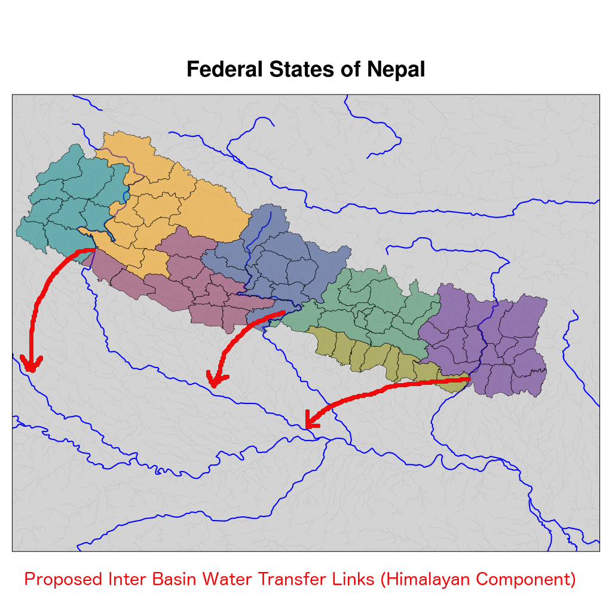

Mar 2019 ,
Prabhakar Shrestha
Himalayan Component of InterBasin Water Transfer Links and the Federal States of Nepal
2015-11-29
Tweet

The new federal states of Nepal (above Figure) with the drafting of the new constitution has brought the country to a grinding halt, with blockade from the southern borders, and protest in the Madhes for two states with borders to southern part of India. There are several voices, articles and news about this ongoing conflict, which has really affected the daily livelihoods of people in Nepal. But, the reason behind the conflict is still not entirely clear! There are some interesting article available from different perspectives,
MadhesiYouth
,
NepaliBlogger
, besides major news channels. However, most of the foucs is currently based on outside politics and ethnic diversity. I am trying to look at this problem from the transboundary water resource perspective. Several studies have shown that India has been experiencing unsustainable consumption of groundwater for irrigation and anthropogenic use in the last decade (e.g., Rodell et al. 2009; Wada et al. 2010). With groundwater depleteing faster than the recharge rate, irrigation through river water is crucial for the food grain production in the country (
NWDA-India
). Since the early proposal in 1972, the Inter Basin Water Transfer (IBWT) has been slowly moving ahead to mitigate flood and drought and reduce the regional imbalance of availabilty of water (
NWDA-India
). This will need reservoirs to be built along the rivers used for IBWT. Within this context, the Himalayan component of the IBWT consists of the use of the major rivers in Nepal (Karnali, Gandak, Koshi and Mechi). Intra Basin transfer has been proposed to transfer water from these rivers from the Terai (Madhes) belt to other rivers in the Indian Gangetic Plains. According to the NWDA, feasibility of some of these IBWT has been also completed. With the above context, now looking at the current conflict in Nepal, regarding only two bordering states to India in the South (Madhes), against the current division of six states looks like a conflict of transboundary water resource allocation. With the establishment of federal states in Nepal, has the conflict already started for the water resource allocation? Source of Figure: I used major river shape files downloaded from
NaturalEarthData
. The district shape files were obtained from
HDX
. The detailed river networks was obtained from the
Ganges Basin River Management Plan
. The proposed IBWT for the Himalayan Component (red lines) was sketched corresponding to the report in
NWDA-India
. Some district boundaries have changed in the Federal States of Nepal, which will slightly change the boundaries in the above figure.